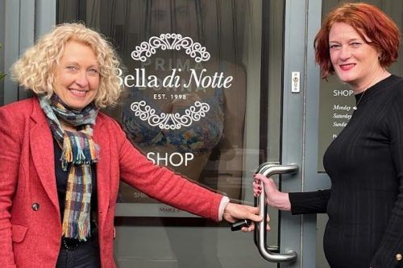

Acquisition of Bella di Notte

WCF has acquired a North Yorkshire-based business as part of its continued expansion. WCF has taken over lingerie and clothing firm Bella di Notte, which specialises in Italian lingerie and better-fit fashion for mature women.
The move will complement our existing national mail-order clothing brands Country Collection, James Meade and The Classic Boutique. Bella di Notte will continue to operate from Malton, North Yorkshire, as part of our ongoing strategy of allowing our diverse brands to run as independent businesses.
Jo Ritzema, Managing Director, said: “Bella di Notte’s focus on product excellence and superior customer service meant it was an ideal fit to complement our existing home shopping clothing brands, with all brands sharing a similar customer demographic. Both companies share a great ethos of investing and supporting their teams to drive innovation and productivity, and we’re working closely with the Bella di Notte team to ensure a smooth transition.”
Founded in 1998 by Susan Johnson, Bella di Notte employs nearly 40 people and is based at a 5,000 sq ft unit in Malton which is home to its mail-order business and a retail store. Susan and her husband Chris will remain in the business in a consultancy capacity for a period of time whilst their responsibilities are transferred to the existing team.
Susan said: “The decision to sell Bella di Notte was taken as part of our succession planning strategy which will allow our positive sales growth to continue. Being part of a larger company will provide access to additional expertise, resource capacity and financial investment, while protecting the team’s job security, allowing them to share in its continued success and giving them more opportunity to make decisions as part of a larger team. After 25 years of running Bella di Notte, the time was right for the business to move forward and I’m looking forward to watching its continued development and growth under the care of WCF.”
Jo added: “We plan to build on the success of Bella di Notte by continuing to deliver the fantastic range of clothing and lingerie which have made it so popular with existing customers, implementing new marketing strategies to find more customers, while also working towards enhancing the range with designs which appeal to an ever younger-minded customer.”
Press Links
- North Yorkshire clothing business is acquired by mail-order clothing firm WCF
- Perfect fit for mail order business as it acquires women’s clothing company
- Clothing business snapped up by home shopping firm
- Cumbrian clothing company WCF acquires Bella di Notte
- Home shopping firm acquires North Yorkshire clothing business
- WCF Ltd Acquires Bella di Notte in Strategic Expansion
< Previous Article
Herding Hill partners with North Tyne Mountain Rescue